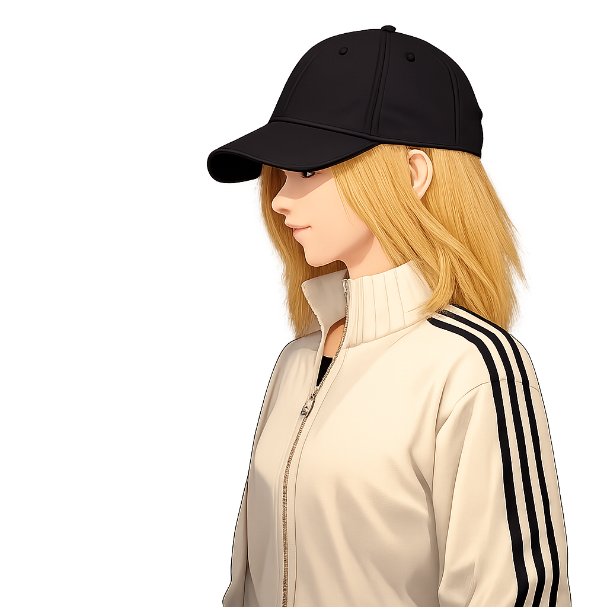

Web development
- Semantic HTML, modern CSS and responsive layouts
- JavaScript and WordPress for practical, maintainable websites
- Accessible UI patterns, filtering, modals and client-side interactions
Software Developer • Web • Backend • Embedded
Portfolio featuring selected projects in web development, backend programming, databases and embedded systems.

The projects come from the data/projects.json file.
I am a software developer with hands-on experience in front-end development, backend APIs, databases and embedded programming. My projects combine practical implementation with clear structure: from responsive interfaces and CMS-based websites to REST APIs, SQL analytics and C++ applications that interact with hardware.
I am a software developer who values clear structure, practical problem solving and software that is pleasant to use. My work spans user interfaces, backend services, databases and embedded systems, and I enjoy turning technical requirements into understandable, working solutions.
I enjoy projects where different parts of software come together: a clear interface, reliable backend logic, meaningful data handling and maintainable code. I am especially motivated by learning through real projects and by improving existing solutions step by step based on requirements, testing and feedback.
I present selected projects as concise case studies that describe the goal, technologies and implementation.
Currently learning about cloud services, Java programming and deepening my knowledge about Web Applications.
I build a working foundation first and then improve the solution through testing, feedback and refinement.
Uses Formspark.